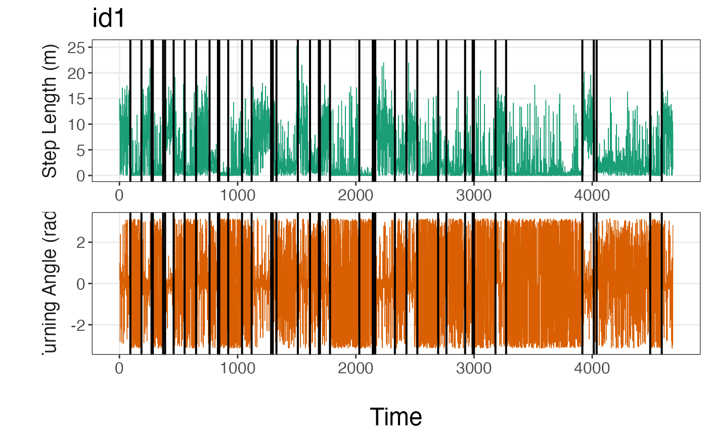

R/segmentation_helper_functions.R
plot_breakpoints.RdVisualize the breakpoints estimated by the segmentation model as they relate to either the original (continuous) or discretized data. These plots assist in determining whether too many or too few breakpoints were estimated as well as whether the user needs to redefine how they discretized their data before analysis.
plot_breakpoints(data, as_date = FALSE, var_names, var_labels = NULL, brkpts)
| data | A list where each element stores a data frame for a given animal
ID. Each of these data frames contains columns for the ID, date or time1
generated by |
|---|---|
| as_date | logical. If |
| var_names | A vector of the column names for the movement variables to be plotted over time. |
| var_labels | A vector of the labels to be plotted on the y-axis for each
movement variable. Set to |
| brkpts | A data frame that contains the breakpoints associated with each
animal ID. This data frame is returned by |
A line plot per animal ID for each movement variable showing how the estimated
breakpoints relate to the underlying data. Depending on the user input for
var_names, this may either be on the scale of the original
continuous data or the discretized data.
# \donttest{ #load data data(tracks.list) #subset only first track tracks.list<- tracks.list[1] #only retain id and discretized step length (SL) and turning angle (TA) columns tracks.list2<- purrr::map(tracks.list, subset, select = c(id, SL, TA)) set.seed(1) # Define model params alpha<- 1 ngibbs<- 1000 nbins<- c(5,8) #future::plan(future::multisession) #run all MCMC chains in parallel dat.res<- segment_behavior(data = tracks.list2, ngibbs = ngibbs, nbins = nbins, alpha = alpha)#> 19.469 sec elapsed# Determine MAP iteration for selecting breakpoints and store breakpoints MAP.est<- get_MAP(dat = dat.res$LML, nburn = ngibbs/2) brkpts<- get_breakpts(dat = dat.res$brkpts, MAP.est = MAP.est) #run function plot_breakpoints(data = tracks.list, as_date = FALSE, var_names = c("step","angle"), var_labels = c("Step Length (m)", "Turning Angle (rad)"), brkpts = brkpts)# }